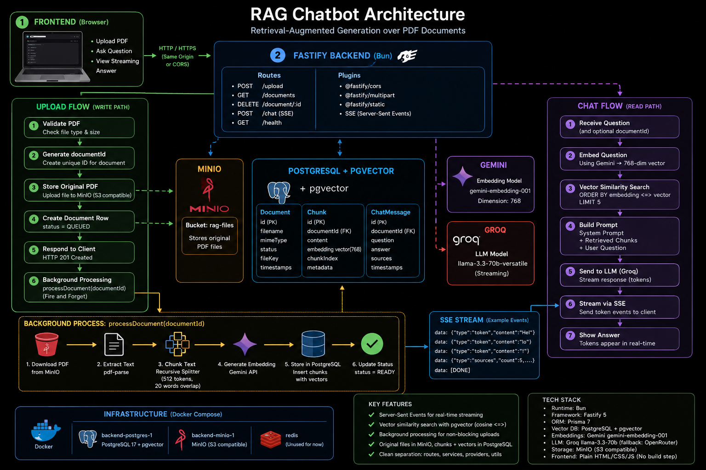

Jan–Feb 2025 · Solo
RAG Chat — Grounded Document Intelligence
- Hybrid RAG retrieval — metadata + lexical + cosine-gated pgvector (distance 0.5): weak evidence never reaches the LLM; the system refuses instead of hallucinating.
- Evaluation harness — 14/14 golden-set cases passed incl. an adversarial trap case (model knows, corpus doesn't); retrieval gated at cosine distance 0.5.
- SSE streaming with async ingestion (BullMQ + Redis) keeping 10–30s extraction off the request path.
BunFastifyTypeScriptpgvectorGeminiGroqSSEBullMQRedis